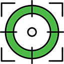
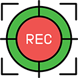

This is the normal initial status right after launching HelioMaker. It indicates that HelioMaker is not yet fully connected to the components required by the selected workflow. A shared-camera workflow requires SharpCap Pro and PHD2; a physical PHD2 camera can be viewed and tuned in Find & Track without a SharpCap link. The indicator changes as the required applications and imaging hardware become available.
Fully connected gear implies that PHD2 has both the camera and mount connected to the system:
Continue reading this section to learn more about the different system states and their associated indicators.
This indicator represents a normal state right after all components (SharpCap Pro and PHD2) and all imaging gear are initially connected. It means that PHD2 has started looping exposures but the selected detector has not yet established a target. The target may be a star, a solar-system body, or a group of surface features.
At this stage, this status is expected and recommended as part of the workflow. To proceed, follow the recommended workflow outlined in a separate section of this manual.
This indicator is displayed when PHD2 has been instructed and configured to detect an object, and the object is successfully detected. "Object" may refer to an entire solar system body or an anchor point on its surface.
In some cases, this indicator might disappear and be replaced with another one, reflecting a failure in object detection. For detailed explanations of potential issues and troubleshooting steps, refer to other sections of this document.
To ensure the best possible results, it is recommended to follow the suggested workflow outlined in a separate help section.
This indicator is displayed when the user starts a sequence in HelioMaker and PHD2 is attempting to detect an object. "Object" can refer to an entire solar system body or an anchor point on its surface, depending on the detection mode configured.
If this symbol is displayed for longer than a few consecutive guiding periods, it may indicate that PHD2 is having difficulties detecting an object. This could be due to various factors, which can be resolved by following the guidelines outlined in the recommended workflow section.
This indicator is displayed when PHD2 is in the process of calibration, a critical phase required before guiding can start. Calibration measures how the telescope mount responds to guiding commands in each of the available axes - Right Ascension (RA) and Declination (Dec).
The purpose of calibration is to allow PHD2 to determine the correct guiding pulse adjustments needed to minimize drift and maintain accurate tracking of the target object.
The calibration process may take a few minutes, depending on the sampling period and other user-defined parameters. For detaild explanations of these parameters, refer to the PHD2 Configuration section of this manual, as well as the official PHD2 user documentation.
Key points to note during calibration:
During the calibration process, HelioMaker may display detailed progress information in the status area. If calibration completes successfully, the resulting PHD2 calibration graph will be shown in the Session area, providing a visual assessment of calibration quality.
If calibration fails or exhibits unacceptable orthogonality error, refer to the troubleshooting section for suggestions.
The Mount Settling indicator is displayed during the settling phase in PHD2, which occurs just before guiding begins. Settling is an essential step after PHD2 completes its calibration process or resumes guiding.
During the settling phase, PHD2 evaluates mount movement to ensure the target is stable within the allowed limits before active guiding starts. The settling process uses the parameters configured in the Advanced Settings dialog of HelioMaker, specifically:
If the user does not change the default values in the Advanced Settings dialog, HelioMaker will use the predefined defaults for either Calibration Settling or Guiding Settling, depending on the current PHD2 state.
During the settling phase, HelioMaker provides real-time feedback about the progress in the Status Area. The displayed information includes:
This detailed feedback helps users monitor and assess the settling process, ensuring the mount stabilizes properly before guiding begins.

The PHD2 Guiding Indicator is displayed when PHD2 has successfully detected an object, is taking exposures, and is actively guiding based on:
For beginners, it is highly recommended to get acquainted with the concepts of PHD2 and guiding best practices. The official PHD2 documentation provides valuable resources:
Use HelioMaker's Find & Track tool to select and tune Full Disk/Crescent, Planetary, or Surface Features detection. If HelioMaker reports that its live physical-camera detection link is unavailable, use the custom PHD2 detector controls for that fallback session:
For more details, refer to PHD2's Solar and Planetary tool documentation and explore additional information available on dedicated forums and other astrophotography web resources.
In addition to the large monitor-state icons shown in this chapter, HelioMaker displays a smaller tracking-rate status indicator in the status area. This indicator reflects the mount's current tracking-rate mode and helps distinguish between standard built-in tracking and dynamically updated custom tracking.
While Dynamic Target Tracking is active, the symbol in the indicator is refreshed periodically to show that HelioMaker is continuing to update the rate in the background. For more information, refer to the Dynamic Target Tracking chapter.
The Recording Cycle indicator is displayed when a HelioMaker sequence is actively running, and SharpCap Pro is capturing images in a high-speed cycle. Depending on the selected Sequence Options, each capture cycle may be defined either by the total number of frames or by a time limit in seconds.
Additionally, you may observe that PHD2 guiding is paused during this phase by checking the following:
When Continuous Guiding is disabled, it offers benefits in specific scenarios:
In these cases, disabling continuous guiding allows for smoother image capture while still maintaining effective target alignment.
When this indicator is active, PHD2 guiding is paused until the current image capture cycle ends. Guiding will automatically resume during the interval before the next capture cycle begins, as defined by the Interval parameter.
When the Continuous Guiding checkbox is disabled, HelioMaker pauses guiding while SharpCap Pro captures images. It is important to ensure that the selected Interval value is long enough to allow guiding to stabilize the target between image capture cycles.
HelioMaker makes an educated guess about the minimal time interval required for the current settings. If the Interval is too short, HelioMaker will display the Interval field with a red background as a warning.
Note: In certain cases, the estimated interval may be overly optimistic. System load, disk write latency, or other factors could cause guiding to become ineffective and allow the target to drift away.
If PHD2 guiding fails to prevent target drift, consider the following options:
During the recording cycle phase, the following information will be displayed:

The Recording Cycle with Guiding indicator is displayed when a HelioMaker sequence is actively running, and SharpCap Pro is capturing images in a high-speed cycle. Unlike the Recording Cycle mode, PHD2 guiding remains active throughout the recording phase.
This powerful feature, introduced by HelioMaker and activated by selecting the Continuous Guiding option, enables a single physical camera to be shared simultaneously for both image capture and guiding. It is particularly useful for sequences defined with a short Interval, where the time between cycles is limited, or when polar alignment is less than perfect, requiring consistent corrections to stabilize the target position.
While PHD2 guiding continues uninterrupted during recording, it is still important to ensure that your guiding settings and HelioMaker detection are correctly configured. Factors such as:
These factors contribute to maintaining stability while guiding and capturing images simultaneously. If the target begins to drift, revisit the configuration of guiding intervals, calibration, and detection parameters.
During this phase, the following information will be displayed:
The SharpCap Recording indicator appears when the user initiates an image capture operation directly from SharpCap Pro, rather than using the HelioMaker sequencer.
If you require PHD2 guiding during a sequence that is controlled outside of HelioMaker, you must perform the following steps manually:
When guiding is managed manually in this manner, PHD2 will not pause guiding between capture cycles. Instead, it will continue guiding continuously under user-defined settings.
The SharpCap Recording indicator differs from the Recording Cycle indicator, which appears when a sequence is initiated through HelioMaker using the Start Sequence button.
Although it is possible to start image capture operations manually from within SharpCap Pro, doing so (i.e., bypassing the HelioMaker sequencer for capture initiation) is generally not recommended unless it serves a specific purpose. Typical reasons for using this approach include:
Controlling image capture operations with the HelioMaker sequencer offers several advantages:
Note: If system performance cannot guarantee perfectly timed capture cycles, HelioMaker will still use a best-effort approach to adhere to the desired schedule.
The Clouds or Poor Seeing indicator is displayed when PHD2 loses its target while guiding. During this time, guiding cannot continue until the conditions improve, such as:
When this indicator appears, PHD2 cannot detect the target, and guiding will remain paused until conditions allow the target to be identified again.
If this issue is caused by misconfigured parameters, it is recommended to:
If the guiding issues are due to external conditions like clouds, haze, or poor seeing, the user will need to wait until the conditions improve.
The No Camera symbol is displayed when SharpCap or PHD2 has lost connection to its camera or when a camera has not been connected yet. It can also appear in the following cases:
If this indicator appears and was not caused by intentional user actions, it is recommended to:
If hardware connectivity issues persist, consider testing the camera or mount with other software or reviewing the manufacturer's troubleshooting guidelines.
The PHD2 Stopped symbol indicates that PHD2 stopped taking exposures and cannot perform its guiding functions. This state can occur for the following reasons:
The Sequence Paused symbol indicates that sequence execution is currently paused, which can be triggered manually by operator or automatically due to certain conditions:
When sequence execution is paused automatically, it will be resumed automatically once the condition that triggered the pause is resolved. For manual pauses, the user can resume the sequence by pressing the Resume Sequence button.
The Focusing symbol indicates that sequence execution is currently paused and is executing SharpCap's Automatic refocusing routine, as configured in Sequence Options.
Results of the refocusing routine will be shown in the Session area, and the sequence will automatically resume once the refocusing routine is completed. The refocusing routine can fail if no prior focusing was performed in SharpCap, or when SharpCap is unable to complete the routine successfully. Refocusing can be cancelled by the user by pressing the Resume sequence button at any time during the refocusing process, which will put the refocusing routine in a "snoozed" mode, where it will be attempted again at the time configured by Sequence Options.
If this indicator persists and was not caused by intentional user actions: